Nagai
Nagai · Yamagata
Nagai
Highlighted on the Yamagata map.
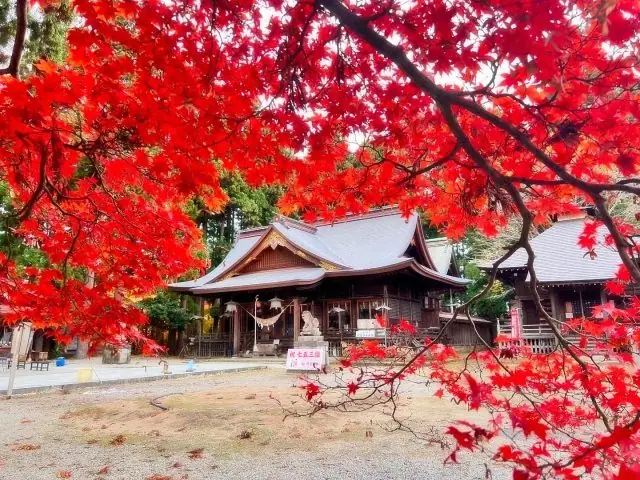
Stay
タスパークホテル
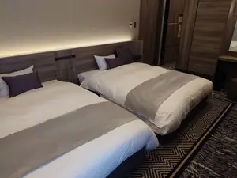
Tasupaakuhoteru
Hotel in Nagai, Yamagata.
卯の花温泉 はぎ苑
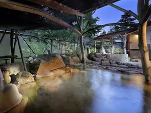
Unohana Onsen Hagi En
Onsen lodging in Nagai, Yamagata.
Dining
拉麺二段
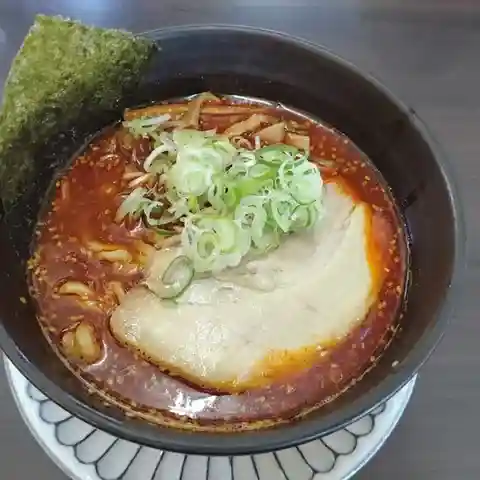
Raamen Nidan
Tsukemen shop in Nagai, Yamagata.
新来軒
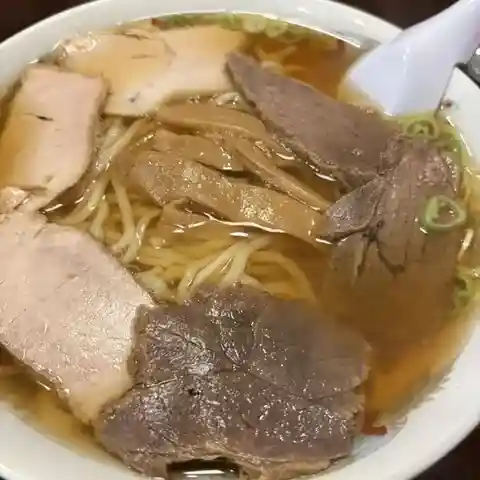
Shinrai Ken
Shokudo diner in Nagai, Yamagata.
そば処 丸万
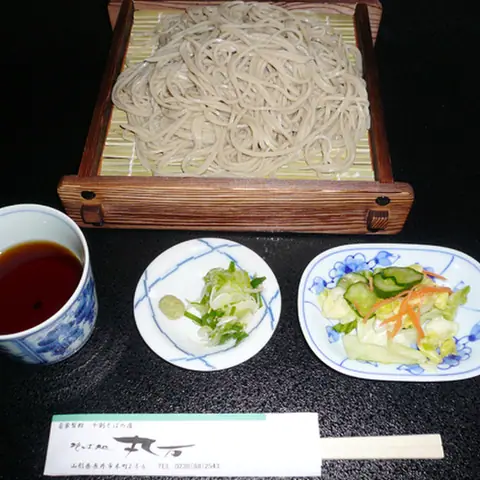
Soba Tokoro Maru Man
Soba restaurant in Nagai, Yamagata.
自家製麺 KEN
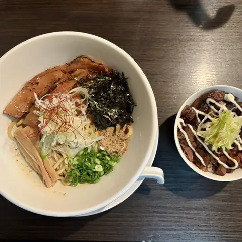
Jikasei Men Ken
Ramen shop in Nagai, Yamagata.
ながいcafe食堂
Nagai Cafe Shokudou
Shokudo diner in Nagai, Yamagata.
麺屋 ももすけ
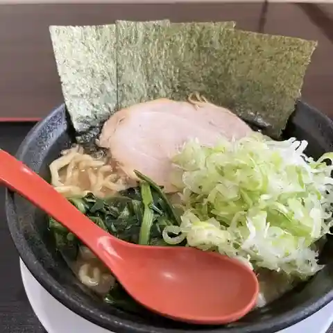
Men Ya Momosuke
Ramen shop in Nagai, Yamagata.
かめや
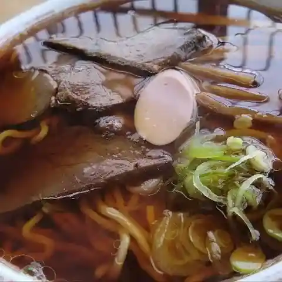
Kameya
Ramen shop in Nagai, Yamagata.
道の駅 川のみなと長井
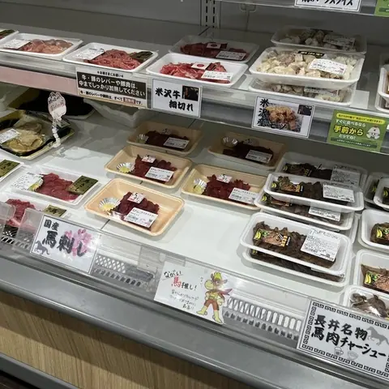
Michi No Eki Kawa Nominato Nagai
Roadside-station eatery in Nagai, Yamagata.
麺屋一門 チャーシュー屋 ひろき
Men Ya Ichimon Chaashuu Ya Hiroki
Ramen shop in Nagai, Yamagata.
蕎花亭
Kyou Hana Tei
Soba restaurant in Nagai, Yamagata.
斎藤麸屋
Saitou Fuya
Japanese sweets shop in Nagai, Yamagata.
BRANDORE
Brandore
Cake shop in Nagai, Yamagata.
たかさか食堂
Takasaka Shokudou
Shokudo diner in Nagai, Yamagata.
縄文そばの館
Joumon Sobano Kan
Soba restaurant in Nagai, Yamagata.
メニーズ カフェ
Meniizu Kafe
Café in Nagai, Yamagata.
みよし食堂
Miyoshi Shokudou
Shokudo diner in Nagai, Yamagata.
来夢
Raimu
Shokudo diner in Nagai, Yamagata.
桃華楼 支店
Touka Rou Shiten
Chinese restaurant in Nagai, Yamagata.
いちわ食堂
Ichiwa Shokudou
Shokudo diner in Nagai, Yamagata.
セカイスケッチコーヒー
Sekaisuketchikoohii
Café in Nagai, Yamagata.
金ちゃんラーメン 長井店
Kin Chan Raamen Nagai Mise
Ramen shop in Nagai, Yamagata.
萬寿屋本舗
Manju Ya Honpo
Japanese sweets shop in Nagai, Yamagata.
わこう庵
Wakou Iori
Ramen shop in Nagai, Yamagata.
らーめん廻
Raamen Kai
Ramen shop in Nagai, Yamagata.
Sights
Mifuchi Keikoku Valley
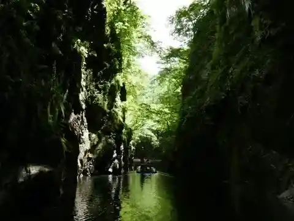
Mifuchi Keikoku Valley in the upper part of Nagai Dam can be only reached by a rescue
Michi no Eki Kawano Minato Nagai
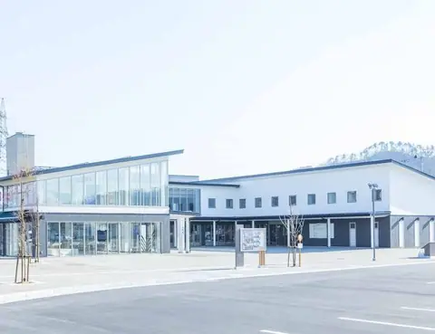
Nagai's gateway roadside station, with tourist information and local specialities. A food corner serves dishes and sweets made from local produce, and a market stall sells fresh vegetables.
Nagai Ayame Park
Including rare varieties, mauve and white irises are in full bloom.
Isazawa Kubo Cherry Blossom Tree
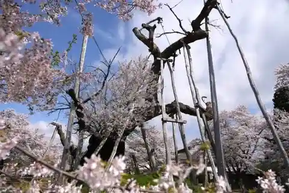
Edohigan, Cherry Blossom tree, a nationally designated natural monument
Senbonzakura(Thousand of Cherry blossoms) at Mogami River Embankment
Senbonzakura(Thousand of Cherry blossoms) at Mogami River Embankment